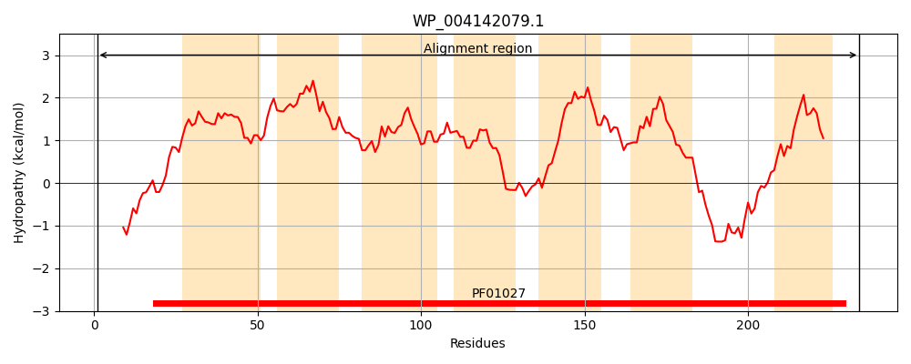
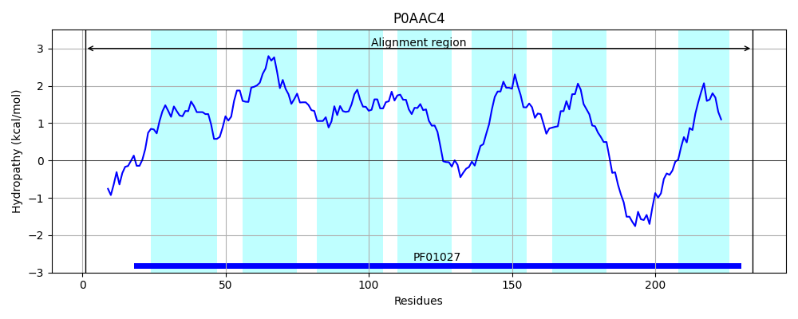
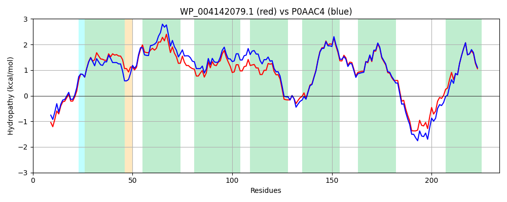

Hit Accession: P0AAC4
Hit TCID: 1.A.14.2.2
Hit Description: gnl|BL_ORD_ID|8652 gnl|TC-DB|P0AAC4|1.A.14.2.2 Inner membrane protein ybhL - Escherichia coli.
Mach Len: 234
e:0.000000
Query TMS Count : 7
Hit TMS Count: 7
TMS-Overlap Score: 7.200000
Predicted Substrates:CHEBI:13704;acetate
BLAST Alignment:
Score: 999 , Bit scores: 389 bits, E-value: 2.9e-139, Alignment length: 234, Percentage identity: 84
Query: 1 MDRYPRSDSIVQGRTGLQTYMAQVYGWMTVGLLLTAFIAWFAANTPAVMMFVFSSKITFFGLIIAQLALVFVLSGMVQRLSAGMATTLFMLYSALTGLTLSSIFIAYTYSSIASTFVVTGGMFGAMSLYGYTTKRDLSGFGSMLFMGLIGIVLASLVNLWLKSEALMWAVTYIGVVLFVGLTAYDTQKLKNIGEQIDTRDSATLRKYSILGALTLYLDFINLFLMLLRIMGNRR 234
MDR+PRSDSIVQ R GLQTYMAQVYGWMTVGLLLTAF+AW+AAN+ AVM +F++++ GLIIAQLALV VLS M+Q+LSAG+ T LFMLYSALTGLTLSSIFI YT +SIASTFVVT GMFGAMSLYGYTTKRDLSGFG+MLFM LIGIVLASLVN WLKSEALMWAVTYIGV++FVGLTAYDTQKLKN+GEQIDTRD++ LRKYSILGALTLYLDFINLFLMLLRI GNRR
Sbjct: 1 MDRFPRSDSIVQPRAGLQTYMAQVYGWMTVGLLLTAFVAWYAANSAAVMELLFTNRVFLIGLIIAQLALVIVLSAMIQKLSAGVTTMLFMLYSALTGLTLSSIFIVYTAASIASTFVVTAGMFGAMSLYGYTTKRDLSGFGNMLFMALIGIVLASLVNFWLKSEALMWAVTYIGVIVFVGLTAYDTQKLKNMGEQIDTRDTSNLRKYSILGALTLYLDFINLFLMLLRIFGNRR 234 | Protein Hydropathy Plots: |
|---|
|  |  |
Pairwise Alignment-Hydropathy Plot:
|
|---|
|  |